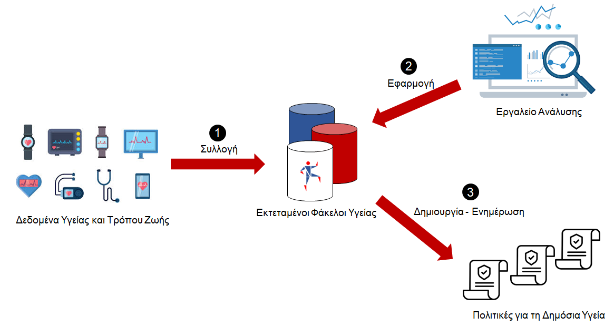

Σχετικά με το έργο
Το beHEALTHIER αποτελεί ένα εθνικό έργο που συγχρηματοδοτείται από την Ελλάδα και την Ευρωπαϊκή Ένωση. Ξεκίνησε τον Ιούνιο του 2020 και θα ολοκληρωθεί τον Δεκέμβριο του 2022.
Στόχος είναι η ανάπτυξη μιας καινοτόμου πλατφόρμας για τη Διαχείριση Ολιστικών Δεδομένων Υγείας με σκοπό την αποτελεσματική εκμετάλλευσή τους για τη χάραξη πολιτικών υγείας.
Το beHEALTHIER στοχεύει στην ανάπτυξη μιας καινοτόμου πλατφόρμας για τη Διαχείριση Ολιστικών Δεδομένων Υγείας με σκοπό την αποτελεσματική εκμετάλλευσή τους για τη χάραξη πολιτικών υγείας. Ειδικότερα, στο έργο προτείνεται μια διαδικασία συλλογής και διαχείρισης ιατρικών δεδομένων που αμέσως ή εμμέσως αφορούν την υγεία ενός ατόμου σε τρία (3) στάδια. Το πρώτο στάδιο είναι η συλλογή των δεδομένων και η δημιουργία των Εκτεταμένων Φακέλων Υγείας. Το δεύτερο είναι η εφαρμογή εργαλείων ανάλυσης στα δεδομένα αυτά, ενώ το τρίτο είναι η δημιουργία πολιτικών για τη Δημόσια Υγεία ή ενημέρωση των ήδη υπάρχουσων με βάση τα αποτελέσματα της ανάλυσης.

Κάποιες από τις καινοτομίες του έργου, που συγχρόνως έχουν τεράστια ερευνητική αξία, αποτελούν τα παρακάτω:
- Εκτεταμένοι Φάκελοι Υγείας (Extended Health Records - XHRs)
- Δίκτυα XHRs
- Απεικόνιση Δεδομένων
- Ανάπτυξη Πολιτικών Υγείας
- Διαχείριση Μεγάλων Δεδομένων σε Πραγματικό Χρόνο
Στόχοι
Όσον αφορά τους στόχους του beHEALTHIER, αυτοί χωρίζονται σε δύο (2) επιμέρους κατηγορίες:
- Επιστημονικοί και Τεχνικοί Στόχοι
- Κοινωνικοί και Εμπορικοί Στόχοι
Συνοπτικά, οι στόχοι του έργου είναι οι ακόλουθοι:
- Αξιοποίηση ετερογενών πηγών δεδομένων και απόκτηση συλλογικής γνώσης μέσω των δικτύων XHRs
- Μοντελοποίηση, και δημιουργία πολιτικών υγείας αξιοποιώντας τα αποτελέσματα των μηχανισμών ανάλυσης δεδομένων του beHEALTHIER
- Διαχείριση μεγάλων δεδομένων που προέρχονται από διαφορετικές πηγές, με αποδοτικό τρόπο
- Απεικόνιση των αποτελεσμάτων των τεχνικών ανάλυσης δεδομένων με ουσιαστικό και κατανοητό τρόπο
- Επιστημονική πρόοδος μέσω της ενίσχυσης της ιατρικής γνώσης και της δημόσιας υγείας
- Υιοθέτηση των μηχανισμών του beHEALTHIER σε διαφορετικούς επιστημονικούς τομείς
Αποτελέσματα
Το beHEALTHIER θα επιχειρήσει να αντιμετωπίσει προκλήσεις που εμφανίζονται στον τομέα
της υγείας, αξιοποιώντας τα παρακάτω:
- Εκτεταμένοι Φάκελοι Υγείας - ΕΦΥ: Κατασκευή νέου είδους φακέλων υγείας που ενσωματώνει
διαφορετικούς τύπους δεδομένων, όπως υγειονομικά
και κοινωνικά δεδομένα, δεδομένα κοινωνικής μέριμνας,
δεδομένα υπό μορφή βιοσημάτων από ιατρικές συσκευές και
δεδομένα υγειονομικής φροντίδας και περίθαλψης ενός ασθενούς
- Δίκτυα ΕΦΥ: Αξιοποίηση διαφορετικών τεχνικών εξόρυξης δεδομένων,
με έμφαση σε αλγορίθμους ομαδοποίησης και ταξινόμησης προκειμένου να εντοπιστούν συσχετίσεις μεταξύ των ΕΦΥ
- Ανάλυση Δεδομένων: Υλοποίηση προβλέψεων και
παροχή πληροφοριών σχετικά με συγκεκριμένα ρίσκα για την υγεία τόσο σε επίπεδο πληθυσμού όσο και σε ατομικό επίπεδο,
εφαρμόζοντας ποικίλες τεχνικές μηχανικής μάθησης
- Διαμόρφωση Πολιτικών Υγείας: Δημιουργία νέων πολιτικών
για τη δημόσια υγεία βάσει των καταχωρήσεων των υπεύθυνων χάραξης πολιτικών, λαμβάνοντας υπόψη τα αποτελέσματα
που προκύπτουν από την Ανάλυση Δεδομένων